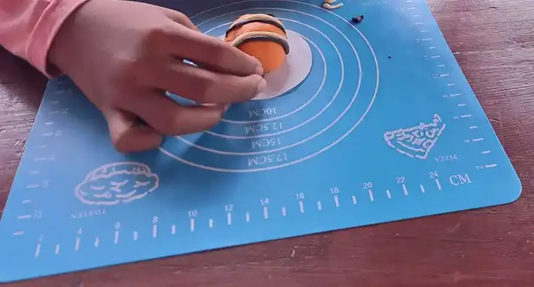

Jawaban singkat: Orang tua sering mencari “lembaga sertifikasi terapis anak di Indonesia”, padahal tidak ada satu label sertifikasi yang otomatis berlaku untuk semua jenis terapi. Jalur verifikasi harus mengikuti profesinya. Periksa pendidikan dan profesi terapis, status registrasi atau izin yang relevan, sertifikat kompetensi bila ada, pengalaman dengan kebutuhan anak, supervisi, serta standar keselamatan layanan.
Daftar isi
Mengapa sertifikasi perlu diperiksa?
Terapi anak bukan satu profesi tunggal. Kebutuhan anak dapat berkaitan dengan komunikasi, motorik, perilaku, aktivitas sehari-hari, kesehatan, belajar, atau partisipasi sosial. Setiap area memiliki pendidikan, kewenangan, dan pendekatan yang berbeda. Seorang terapis yang berpengalaman di satu bidang belum tentu berwenang atau kompeten menangani kebutuhan di bidang lain.
Sertifikasi juga bukan pengganti asesmen. Dokumen kompetensi membantu menjawab “siapa yang telah dinilai dan dalam ruang lingkup apa”, sedangkan asesmen membantu menjawab “dukungan apa yang dibutuhkan anak ini”. Keduanya perlu dipisahkan agar orang tua tidak membeli janji yang tidak dapat diverifikasi.
Jalur verifikasi yang masuk akal

1. Kenali profesinya
Tanyakan apakah layanan diberikan oleh terapis okupasi, terapis wicara, fisioterapis, psikolog, dokter, guru pendidikan khusus, atau profesi lain. Minta nama pendidikan dan ruang lingkup layanan. Istilah “terapis anak” saja terlalu umum untuk menjadi dasar keputusan.
2. Cek lembaga penerbit
Jika seseorang menyebut sertifikasi profesi melalui LSP, periksa nama LSP dan status lisensinya di kanal BNSP. Jangan menyimpulkan bahwa setiap kursus atau komunitas adalah lembaga sertifikasi profesi. Untuk profesi kesehatan, tanyakan juga registrasi atau izin yang memang diwajibkan oleh jalur profesinya kepada fasilitas atau dinas kesehatan terkait.
3. Minta dokumen yang dapat diverifikasi
- Nama lengkap dan profesi.
- Institusi pendidikan atau pelatihan utama.
- Nomor sertifikat dan nama penerbit.
- Masa berlaku dan ruang lingkup kompetensi.
- Nama fasilitas tempat layanan diberikan dan penanggung jawab klinis bila ada.
- Prosedur pengaduan, perlindungan anak, dan persetujuan tindakan.
Jangan meminta atau menyebarkan data pribadi yang tidak diperlukan. Untuk anak, fokuskan verifikasi pada kualifikasi dan keamanan layanan, bukan pada memajang dokumen identitas secara publik.
Checklist memilih terapis anak
| Yang ditanyakan | Jawaban yang membantu | Tanda perlu hati-hati |
|---|---|---|
| Tujuan layanan | Tujuan konkret terkait aktivitas anak dan cara mengukurnya | Janji “sembuh total” tanpa target terukur |
| Asesmen | Ada wawancara, observasi, dan bila perlu alat ukur sesuai profesi | Langsung memberi program tanpa mengenal anak |
| Koordinasi | Bersedia berkomunikasi dengan keluarga dan tim yang relevan | Melarang orang tua bertanya atau meminta pendapat kedua |
| Keselamatan | Menjelaskan risiko, persetujuan, privasi, dan batas intervensi | Menggunakan paksaan atau hukuman sebagai metode utama |
| Bukti kompetensi | Dokumen dan penerbit dapat diverifikasi | Hanya logo, foto sertifikat buram, atau klaim gelar yang tidak jelas |
Mengapa asesmen dan tujuan penting?
Intervensi harus dikaitkan dengan partisipasi anak: apakah ia lebih mudah makan, berkomunikasi, bermain, belajar, berpindah tempat, atau mengikuti rutinitas. Kemajuan tidak cukup diukur dari anak terlihat “diam” selama sesi. Orang tua berhak meminta penjelasan tentang tujuan, frekuensi, indikator perubahan, dan kapan program dievaluasi.
Untuk kebutuhan sensorik, AOTA mengingatkan agar intervensi berbasis sensorik tidak diberikan secara serampangan tanpa hasil asesmen yang terdokumentasi. Prinsip ini dapat menjadi pengingat umum: pilih intervensi berdasarkan kebutuhan anak dan tujuan aktivitas, bukan karena sebuah metode sedang populer.
Tanda perlu mencari pendapat kedua
- Anak mengalami luka, ketakutan, atau penurunan fungsi setelah layanan.
- Terapis menjanjikan hasil pasti atau meminta menghentikan semua layanan lain tanpa alasan yang dapat diuji.
- Orang tua tidak boleh melihat rencana, tujuan, atau catatan kemajuan.
- Dokumen kualifikasi tidak dapat diverifikasi atau tidak sesuai dengan klaim layanan.
- Metode melibatkan hukuman, paksaan, penghinaan, atau tindakan yang tidak disetujui keluarga.
Bila ada dugaan kekerasan atau risiko keselamatan, utamakan keselamatan anak dan gunakan kanal pengaduan resmi. Simpan catatan tanggal, nama petugas, jenis tindakan, dan bukti komunikasi.
Pertanyaan yang sering diajukan
Apakah ada satu lembaga nasional yang mensertifikasi semua terapis anak?
Tidak tepat menyebut satu lembaga untuk semua jenis terapi. Jalur pengakuan bergantung pada profesi, jenis layanan, pendidikan, aturan kesehatan atau pendidikan yang berlaku, dan bila relevan LSP yang memiliki lisensi BNSP.
Apa yang perlu ditanyakan sebelum memilih terapis?
Tanyakan profesi dan pendidikan, pengalaman dengan kebutuhan anak, bentuk asesmen, tujuan intervensi, cara mengukur perkembangan, supervisi, biaya, kebijakan keselamatan, serta cara berkoordinasi dengan dokter, psikolog, guru, atau tenaga lain.
Apakah sertifikat kursus sama dengan izin praktik?
Tidak selalu. Sertifikat kursus menunjukkan seseorang mengikuti pelatihan tertentu. Itu tidak otomatis membuktikan lisensi, kewenangan praktik, atau kompetensi untuk semua kebutuhan anak. Minta penjelasan tertulis tentang status sertifikat dan ruang lingkup layanan.
Sumber dan bacaan lanjutan
Status tinjauan medis: artikel ini disusun oleh tim pendidik, belum ditinjau oleh dokter berlisensi. Tinjauan oleh tenaga medis berkredensial sedang kami siapkan dan status ini akan diperbarui di halaman ini begitu selesai. Alur tinjauan dan koreksi dijelaskan di Kebijakan Editorial YUKA. Untuk keputusan diagnosis atau terapi, rujuklah pada dokter anak, psikiater anak, psikolog, atau terapis yang menangani anak.